2. Dispositifs de stockage¶
Une base de données est constituée, matériellement, d’un ou plusieurs fichiers stockés sur un support non volatile. Le support le plus couramment employé est le disque magnétique (« disque dur ») qui présente un bon compromis en termes de capacité de stockage, de prix et de performance. Un concurrent sérieux est le Solid State Drive, dont les performances sont nettement supérieures, et le coût en baisse constante, ce qui le rend de plus en plus concurrentiel.
Il y a deux raisons principales à l’utilisation de fichiers. Tout d’abord il est possible d’avoir affaire à des bases de données dont la taille dépasse de loin celle de la mémoire principale. Ensuite – et c’est la justification principale du recours aux fichiers, même pour des bases de petite taille – une base de données doit survivre à l’arrêt de l’ordinateur qui l’héberge, que cet arrêt soit normal ou dû à un incident matériel.
Important
Une donnée qui n’est pas sur un support persistant est potentiellement perdue en cas de panne.
L’accès à des données stockées sur un support persistant, par contraste avec les applications qui manipulent des données en mémoire centrale, est une des caractéristiques essentielles d’un SGBD. Elle implique notamment des problèmes potentiels de performance puisque le temps de lecture d’une information sur un disque est considérablement plus élevé que celui d’un accès en mémoire principale. L’organisation des données sur un disque, les structures d’indexation et les algorithmes de recherche utilisés constituent donc des aspects essentiels des SGBD du point de vue des performances.
Une bonne partie du présent cours est, de fait, consacrée à des méthodes, techniques et structures de données dont le but principal est de limiter le nombre et la taille de données lues sur le support persistant.
Un bon système se doit d’utiliser au mieux les techniques disponibles afin de minimiser les temps d’accès. Dans ce chapitre nous décrivons les techniques de stockage de données et le transfert de ces dernières entre les différents niveaux de mémoire d’un ordinateur.
La première session est consacrée aux dispositifs de stockage. Nous détaillons successivement les différents types de mémoire utilisées, en insistant particulièrement sur le fonctionnement des disques magnétiques. Nous abordons en seconde session les principales techniques de gestion de la mémoire utilisées par un SGBD. La troisième session présente les principes d’organisation des fichiers de base de données.
S1: Supports de stockage¶
Supports complémentaires:
Un système informatique offre plusieurs mécanismes de stockage de l’information, ou mémoires. Ces mémoires se différencient par leur prix, leur rapidité, le mode d’accès aux données (séquentiel ou par adresse) et enfin leur durabilité.
Les mémoires volatiles perdent leur contenu quand le système est interrompu, soit par un arrêt volontaire, soit à cause d’une panne.
Les mémoires persistantes comme les disques magnétiques, les SSD, les CD ou les bandes magnétiques, préservent leur contenu même en l’absence d’alimentation électrique.
Mémoires¶
D’une manière générale, plus une mémoire est rapide, plus elle est chère et – conséquence directe – plus sa capacité est réduite. Les différentes mémoires utilisées par un ordinateur constituent donc une hiérarchie (Fig. 2.1), allant de la mémoire la plus petite mais la plus efficace à la mémoire la plus volumineuse mais la plus lente.
la mémoire cache est une mémoire intermédiaire permettant au processeur d’accéder très rapidement aux données à traiter ;
la mémoire vive, ou mémoire principale stocke les données et les processus constituant l’espace de travail de la machine; toute information (donnée ou programme) doit être en mémoire principale pour pouvoir être traitée par un processeur ;
les disques magnétiques constituent le principal périphérique de mémoire persistante; ils offrent une grande capacité de stockage tout en gardant des accès en lecture et en écriture relativement efficaces;
les Solid State Drive ou SSD sont une alternative récente aux disques magnétiques; leurs peformances sont supérieures, mais leur coût élevé;
enfin les CD ou les bandes magnétiques sont des supports très économiques mais leur lenteur les destine plutôt aux sauvegardes à long terme.
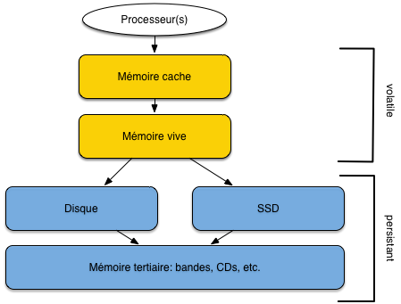
Fig. 2.1 Hiérarchie des mémoires¶
La mémoire vive (que nous appellerons mémoire principale) et les disques (ou mémoire secondaire) sont les principaux niveaux à considérer pour des applications de bases de données. Une base de données doit être stockée sur disque, pour les raisons de taille et de persistance déjà évoquées, mais les données doivent impérativement être transférées en mémoire vive pour être traitées. Dans l’hypothèse (réaliste) où seule une fraction de la base peut résider en mémoire centrale, un SGBD doit donc en permanence effectuer des transferts entre mémoire principale et mémoire secondaire pour satisfaire les requêtes des utilisateurs. Le coût de ces transferts intervient de manière prépondérante dans les performances du système.
Vocabulaire: Mais qu’est-ce qu’une « donnée »?
Le terme de donnée désigne le codage d’une unité d’information. Dans le contexte de ce cours, « donnée » sera toujours synonyme de nuplet (ligne dans une table).
On parlera d’enregistrement pour désigner le codage binaire d’un nuplet, dans une perspective de stockage.
La technologie évoluant rapidement, il est délicat de donner des valeurs précises pour la taille des différentes mémoires. Un ordinateur est typiquement équipé de quelques Gigaoctets de mémoire vive (typiquement 4 à 16 Go pour un ordinateur personnel, plusieurs dizaines de Go pour un serveur de données, plusieurs centaines pour de très gros serveurs). La taille d’un disque magnétique est de l’ordre du Téraoctet, soit un rapport de 1 à 1 000 avec les données en mémoire centrale. Les SSD ont des tailles comparables à celles des disques magnétiques (pour un coût supérieur).
Performances des mémoires¶
Comment mesurer les performances d’une mémoire? Nous retiendrons deux critères essentiels:
Temps d’accès: connaissant l’adresse d’un enregistrement, quel est le temps nécessaire pour aller à l’emplacement mémoire indiqué par cette adresse et obtenir l’information ? On parle de lecture par clé ou encore d’accès direct pour cette opération;
Débit: quel est le volume de données lues par unité de temps dans le meilleur des cas?
Le premier critère est important quand on effectue des accès dits aléatoires. Ce terme indique que deux accès successifs s’effectuent à des adresses indépendantes l’une de l’autre, qui peuvent donc être très éloignées. Le second critère est important pour les accès dits séquentiels dans lesquels on lit une collection d’information, dans un ordre donné. Ces deux notions sont essentielles.
Notion: accès direct/accès séquentiel
- Retenez les notions suivantes:
Accès direct: étant donné une adresse dans la mémoire (et principalement sur un disque), on accède à la donnée stockée à cette adresse.
Accès séquentiel: on parcours la mémoire (et principalement un disque) dans un certain ordre en lisant les enregistrements au fur et à mesure.
Les performances des deux types d’accès sont extrêmement variables selon le type de support mémoire. Le temps d’un accès direct en mémoire vive est par exemple de l’ordre de 10 nanosecondes (\(10^{-8}\) sec.), de 0,1 millisecondes pour un SSD, et de l’ordre de 10 millisecondes (\(10^{-2}\) sec.) pour un disque. Cela représente un ratio approximatif de 1 000 000 (1 million!) entre les performances respectives de la mémoire centrale et du disque magnétique ! Il est clair dans ces conditions que le système doit tout faire pour limiter les accès au disque.
Le tableau suivant résumé les ordres de grandeur des temps d’acès pour les différentes mémoires.
Tableau 2.1 Performance des divers types de mémoire¶ Type mémoire
Taille
Temps d’accès aléatoire
Temps d’accès séquentiel
Mémoire cache (Static RAM)
Quelques Mo
\(\approx 10^{-8}\) (10 nanosec.)
Plusieurs dizaines de Gos par seconde
Mémoire principale (Dynamic RAM)
Quelques Go
\(\approx 10^{-8} - 10^{-7}\) (10-100 nanosec.)
Quelques Go par seconde
Disque magnétique
Quelques Tos
\(\approx 10^{-2}\) (10 millisec.)
Env. 100 Mo par seconde.
SSD
Quelques Tos
\(\approx 10^{-4}\) (0,1 millisec.)
Jusqu’à quelques Gos par seconde.
Disques¶
Les disques magnétiques sont les composants les plus lents, et pourtant ils sont indispensables pour la gestion d’une base de données. Il est donc très utile de comprendre comment ils fonctionnent.
Dispositif¶
Un disque magnétique est une surface circulaire magnétisée capable d’enregistrer des informations numériques. La surface magnétisée peut être située d’un seul côté (« simple face ») ou des deux côtés (« double face ») du disque.
Les disques sont divisés en secteurs, un secteur constituant la plus petite surface d’adressage. En d’autres termes, on sait lire ou écrire des zones débutant sur un secteur et couvrant un nombre entier de secteurs (1 au minimum: le secteur est l’unité de lecture sur le disque). La taille d’un secteur est le plus souvent de 512 octets.
La plus petite information stockée sur un disque est un bit qui peut valoir 0 ou 1. Les bits sont groupés par 8 pour former des octets, les octets groupés par 64 pour former des secteurs, et une suite de secteurs forme un cercle ou piste sur la surface du disque.
Un disque est entraîné dans un mouvement de rotation régulier par un axe. Une tête de lecture (deux si le disque est double-face) vient se positionner sur une des pistes du disque et y lit ou écrit les enregistrements. Le nombre minimal d’octets lus par une tête de lecture est physiquement défini par la taille d’un secteur (en général 512 octets). Cela étant le système d’exploitation peut choisir, au moment de l’initialisation du disque, de fixer une unité d’entrée/sortie supérieure à la taille d’un secteur, et multiple de cette dernière. On obtient des blocs, dont la taille est typiquement 512 octets (un secteur), 1 024 octets (deux secteurs) 4 096 octets (huit secteurs) ou 8 192 octets (seize secteurs).
Chaque piste est donc divisée en blocs (ou pages) qui constituent l’unité d’échange entre le disque et la mémoire principale.
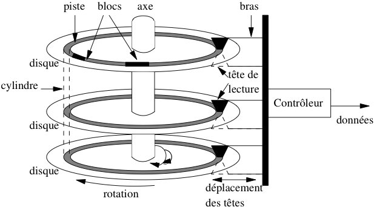
Fig. 2.2 Fonctionnement d’un disque magnétique.¶
Toute lecture ou toute écriture sur les disques s’effectue par blocs. Même si la lecture ne concerne qu’une donnée occupant 4 octets, tout le bloc contenant ces 4 octets sera transmis en mémoire centrale. Cette caractéristique est fondamentale pour l’organisation des données sur le disque. Un des objectifs du SGBD est de faire en sorte que, quand il est nécessaire de lire un bloc de 4 096 octets pour accéder à un entier de 4 octets, les 4 092 octets constituant le reste du bloc ont de grandes chances d’être utiles à court terme et se trouveront donc déjà chargée en mémoire centrale quand le système en aura besoin. C’est un premier exemple du principe de localité que nous discutons plus loin.
Définition: bloc
Un bloc est une zone mémoire contigue de taille fixe stockée sur disque, lue ou écrite solidairement. Le bloc est l’unité d’entrée/sortie entre la mémoire secondaire et la mémoire principale.
La tête de lecture n’est pas entraînée dans le mouvement de rotation. Elle se déplace dans un plan fixe qui lui permet de se rapprocher ou de s’éloigner de l’axe de rotation des disques, et d’accéder à l’une des pistes. Pour limiter le coût de l’ensemble de ce dispositif et augmenter la capacité de stockage, les disques sont empilés et partagent le même axe de rotation (voir Fig. 2.2). Il y a autant de têtes de lectures que de disques (deux fois plus si les disques sont à double face) et toutes les têtes sont positionnées solidairement dans leur plan de déplacement. À tout moment, les pistes accessibles par les têtes sont donc les mêmes pour tous les disques de la pile, ce qui constitue une contrainte dont il faut savoir tenir compte quand on cherche à optimiser le placement des données.
L’ensemble des pistes accessibles à un moment donné constitue le cylindre. La notion de cylindre correspond donc à toutes les données disponibles sans avoir besoin de déplacer les têtes de lecture.
Enfin le dernier élément du dispositif est le contrôleur qui sert d’interface avec le système d’exploitation. Le contrôleur reçoit du système des demandes de lecture ou d’écriture, et les transforme en mouvements appropriés des têtes de lectures, comme expliqué ci-dessous.
Entrées/sorties sur un disque¶
Un disque est une mémoire à accès dit semi-direct. Contrairement à une bande magnétique par exemple, il est possible d’accéder à une information située n’importe où sur le disque sans avoir à parcourir séquentiellement tout le support. Mais, contrairement à la mémoire principale, avant d’accéder à une adresse, il faut attendre un temps variable lié au mécanisme de rotation du disque.
L’accès est fondé sur une adresse donnée à chaque bloc au moment de l’initialisation du disque par le système d’exploitation. Cette adresse est composée des trois éléments suivants :
le numéro du disque dans la pile ou le numéro de la surface si les disques sont à double-face ;
le numéro de la piste ;
le numéro du bloc sur la piste.
La lecture d’un bloc, étant donnée son adresse, se décompose en trois étapes :
positionnement de la tête de lecture sur la piste contenant le bloc ;
rotation du disque pour attendre que le bloc passe sous la tête de lecture (rappelons que les têtes sont fixes, c’est le disque qui tourne) ;
transfert du bloc.
La durée d’une opération de lecture est donc la somme des temps consacrés à chacune des trois opérations, ces temps étant désignés respectivement par les termes délai de positionnement, délai de latence et temps de transfert. Le temps de transfert est négligeable pour un bloc, mais peu devenir important quand des milliers de blocs doivent être lus. Le mécanisme d’écriture est à peu près semblable à la lecture, mais peu prendre un peu plus de temps si le contrôleur vérifie que l’écriture s’est faite correctement.
La latence de lecture fait du disque une mémoire à accès semi-direct, comme mentionné précédemment. C’est aussi cette latence qui rend le disque lent comparé aux autres mémoires, surtout si un déplacement des têtes de lecture est nécessaire. Une conséquence très importante est qu’il est de très loin préférable de lire sur un disque en accès séquentiel que par une séquence d’accès aléatoires (cf. exercices).
Spécifications d’un disque¶
Le Tableau 2.2 donne les spécifications d’un disque, telles qu’on peut les trouver sur le site de n’importe quel constructeur. Les chiffres donnent un ordre de grandeur pour les performances d’un disque, étant bien entendu que les disques destinés aux serveurs sont beaucoup plus performants que ceux destinés aux ordinateurs personnels. Le modèle donné en exemple appartient au mileu de gamme.
Le disque comprend 5 335 031 400 secteurs de 512 octets chacun, la multiplication des deux chiffres donnant bien la capacité totale de 2,7 To. Les secteurs étant répartis sur 3 disques double-face, il y a donc 5 335 031 400 / 6 = 889 171 900 secteurs par surface.
Le nombre de secteurs par piste n’est pas constant, car les pistes situées près de l’axe sont bien entendu beaucoup plus petites que celles situées près du bord du disque. On ne peut, à partir des spécifications, que calculer le nombre moyen de secteurs par piste, qui est égal à \(889 171 900/15 300=58 115\). On peut donc estimer qu’une piste stocke en moyenne \(58 115 \times 512 = 29\) Mégaoctets. Ce chiffre donne le nombre d’octets qui peuvent être lus en séquentiel, sans délai de latence ni délai de positionnement.
Tableau 2.2 Spécification d’un disque¶ Caractéristique
Performance
Capacité
2,7 To
Taux de transfert
100 Mo/s
Cache
3 Mo
Nbre de disques
3
Nbre de têtes
6
Nombre de cylindres
15 300
Vitesse de rotation
10 000 rpm (rotations par minute)
Délai de latence
En moyenne 3 ms
Temps de positionnement moyen
5,2 ms
Déplacement de piste à piste
0,6 ms
Les temps donnés pour le temps de latence et le délai de rotation ne sont que des moyennes. Dans le meilleur des cas, les têtes sont positionnées sur la bonne piste, et le bloc à lire est celui qui arrive sous la tête de lecture. Le bloc peut alors être lu directement, avec un délai réduit au temps de transfert.
Ce temps de transfert peut être considéré comme négligeable dans le cas d’un bloc unique, comme le montre le raisonnement qui suit, basé sur les performances du Tableau 2.2. Le disque effectue 10 000 rotations par minute, ce qui correspond à 166,66 rotations par seconde, soit une rotation toutes les 0,006 secondes (6 ms). C’est le temps requis pour lire une piste entièrement. Cela donne également le temps moyen de latence de 3 ms.
Pour lire un bloc sur une piste, il faudrait tenir compte du nombre exact de secteurs, qui varie en fonction de la position exacte. En prenant comme valeur moyenne 303 secteurs par piste, et une taille de bloc égale à 4 096 soit huit secteurs, on obtient le temps de transfert moyen pour un bloc :
Le temps de transfert ne devient significatif que quand on lit plusieurs blocs consécutivement. Notez quand même que les valeurs obtenues restent beaucoup plus élevées que les temps d’accès en mémoire principale qui s’évaluent en nanosecondes.
Dans une situation moyenne, la tête n’est pas sur la bonne piste, et une fois la tête positionnée (temps moyen 5.2 ms), il faut attendre une rotation partielle pour obtenir le bloc (temps moyen 3 ms). Le temps de lecture est alors en moyenne de 8.2 ms, si on ignore le temps de transfert.
Les Solid State Drives¶
Un disque solid-state, ou SSD, est bâti sur la mémoire dite flash, celle utilisée pour les clés USB. Ce matériel est constitué de mémoires à semi-conducteurs à l’état solide. Contrairement aux disques magnétiques à rotation, les emplacements mémoire sont à accès direct, ce qui élimine le temps de latence.
Le temps d’accès direct est considérablement diminué, de l’ordre de quelques dixièmes de millisecondes, soit cent fois moins (encore une fois il s’agit d’un ordre de grandeur) que pour un disque magnétique. Le débit en lecture/écriture est également bien plus important, de l’ordre de 1 Go par sec, soit 10 fois plus efficace. La conclusion simple est que le meilleur moyen d’améliorer les performances d’une base de données est de la placer sur un disque SSD, avec des résultats spectaculaires ! Evidemment, il y a une contrepartie: le coût est plus élevé que pour un disque traditionnel, même si l’écart tend à diminuer. En 2015, il faut compter 200 à 300 Euros pour un disque SSD d’un demi Téraoctet, environ 10 fois moins pour un disque magnétiqe de même capacité.
Un problème technique posé par les SSD est que le nombre d’écritures possibles sur un même secteur est limité. Les constructeurs ont semble-t-il bien géré cette caractéristique, le seul inconvénient visible étant la diminution progressive de la capacité du disque à cause des secteurs devenus inutilisables.
En conclusion, les SSD ont sans doute un grand avenir pour la gestion des bases de données de taille faible à moyenne (disons de l’ordre du Téraoctet). Si on ne veut pas se casser la tête pour améliorer les performances d’un système, le passage du disque magnétique au SSD est une méthode sûre et rapide.
Quiz¶
Pourquoi faut-il placer une base de données sur une mémoire persistante?

Qu’entend-on par accès direct
Qu’entend-on par accès aléatoire
Quelle affirmation sur les blocs est vraie:
Pourquoi vaut-il mieux lire une collection d’enregistrements par un accès séquentiel plutôt que par un ensemble d’accès aléatoires.
Quelle définition du délai de latence est correcte
Quelle définition du délai de positionnement est correcte

{kind=link}
{kind=link}
S2: Gestion des mémoires¶
Supports complémentaires:
Un SGBD doit gérer essentiellement deux mémoires: la mémoire principale, et la mémoire secondaire (le disque). Toutes les enregistrements doivent être en mémoire secondaire, pour des raisons de persistance. Une partie de ces enregistrements est en mémoire principale, pour des raisons de performance.
La Fig. 2.3 illustre ces deux composants essentiels. Tout serveur de base de données s’exécute sur une machine qui lui alloue une partie de sa mémoire RAM, que nous appelerons mémoire tampon ou cache pour faire simple, ainsi qu’une partie du disque magnétique. Ces deux ressources sont gérées par un module du SGBD, le gestionnaire des accès (GA dans ce qui suit).
{kind=link}
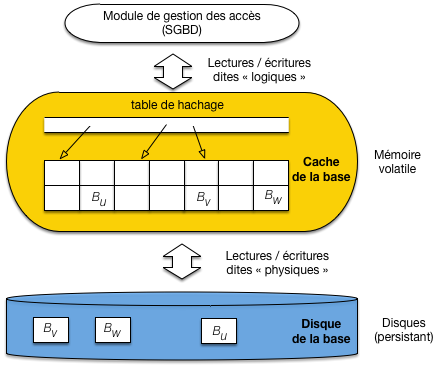
Fig. 2.3 Le cache et le disque, ressources mémoires allouées au SGBD¶
Les enregistrements sont disponibles dans des blocs qui constituent l’unité de lecture et d’écriture sur le disque. Le GA exécute des requêtes de lecture ou d’écriture, et nous allons considérer comme acquis que ces requêtes comprennent toujours l’adresse du bloc. Cette section explique comment ces requêtes sont exécutées.
Les lectures¶
Comme le montre la Fig. 2.3, le cache est constitué de blocs en mémoire principale qui sont des copies de blocs sur le disque. Quand une lecture est requise, deux cas sont possibles:
l’enregistrement fait partie d’un bloc qui est déjà dans le cache, le GA prend le bloc, accède à l’enregistrement et le retourne;
sinon il faut d’abord aller lire un bloc sur le disque, et le placer dans le cache pour se ramener au cas précédent.
La demande d’accès est appelée lecture logique: elle ignore si l’enregistrement est présent en mémoire ou non. Le GA détermine si une lecture physique sur le disque est nécessaire. La lecture physique implique le chargement d’un bloc du disque vers le cache, et donc un temps d’attente considérablement supérieur.
Note
Comment faire pour savoir si un bloc est ou non en cache? Grâce à une table de hachage (illustrée sur la Fig. 2.3) qui pointe sur les blocs chargés en mémoire. L’accès à un bloc du cache, étant donnée son adresse, est extrêmement rapide avec une telle structure.
Un SGBD performant cherche à maintenir en mémoire principale une copie aussi large que possible de la base de données, et surtout la partie la plus utilisée. Une bonne organisation va minimiser le nombre de lectures physiques par rapport au nombre de lectures logiques. On mesure cette efficacité avec un paramètre nommé le hit ratio, défini comme suit :
Si toutes les lectures logiques (demande de bloc) aboutissent à une lecture physique (accès au disque), le hit ratio est 0 ; s’il n’y a aucune lecture physique (tous les enregistrements demandés sont déjà en mémoire), le hit ratio est de 1.
Il est très important de comprendre que le hit ratio n’est pas simplement le rapport entre la taille de la mémoire cache et celle de la base. Ce serait vrai si tous les blocs étaient lus avec une probabilité uniforme, mais en pratique certains blocs sont demandés beaucoup plus souvent que d’autres, et les écarts sont de plus variables dans le temps. Le hit ratio représente justement la capacité du système à stocker dans le cache les pages les plus lues pendant une période donnée.
Plus la mémoire cache est importante, et plus il sera possible d’y conserver une partie significative de la base, avec un hit ratio élevé et des gains importants en terme de performance. Cela étant le hit ratio ne croît toujours pas linéairement avec l’augmentation de la taille de la mémoire cache. Si la disproportion entre la taille du cache et celle de la base est élevée, le hit ratio est conditionné par le pourcentage des accès à la base qui lisent les blocs avec une probabilité uniforme. Prenons un exemple pour clarifier les choses.
Un exemple pour comprendre
La base de données fait 2 GigaOctets, le cache 30 MégaOctets.
Supposons que dans 60 % des cas une lecture logique s’adresse à une partie limitée de la base, correspondant aux principales tables de l’application, dont la taille est, disons, 200 Mo. Dans 40 % des autres cas les accès se font avec une probabilité uniforme dans les 1,8 Go restant.
En augmentant la taille du cache jusqu’à 333 Mo, on va améliorer régulièrement le hit ratio jusqu’à un peu plus de 0,6. En effet les 200 Mo correspondant à 60 % des lectures vont finir par se trouver placées en cache (\(200\ Mo\ =\ 333 \times 0,6\)), et n’en bougeront pratiquement plus. En revanche, les 40 % des autres accès accèderont à 1,8 Go avec seulement 133 Mo et le hit ratio restera très faible pour cette partie-là.
En augmentant la mémoire cache au-delà de 333 Mo, on améliorera peu le hit ratio puisque les 40 % de lectures uniformes garderont peu de chances de trouver le bloc demandé en cach.
Conclusion : si vous cherchez la meilleure taille pour un cache sur une très grosse base, faites l’expérience d’augmenter régulièrement l’espace mémoire alloué jusqu’à ce que la courbe d’augmentation du hit ratio s’applatisse. En revanche sur une petite base où il est possible d’allouer un cache de taille comparable à la base, on a la possibilité d’obtenir un hit ratio optimal de 1.
Les mises à jour¶
Pour les lectures, les techniques sont finalement assez simple. Avec les écritures cela se complique, mais cela va nous permettre de vérifier la mise en œuvre d’un principe fondamental que nous retrouverons systématiquement par la suite:
Principe (rappel)
Il faut toujours éviter dans la mesure du possible d’effectuer des écritures aléatoires et préférer des écritures séquentielles.
À ce principe correspond une technique, elle aussi fondamentale (elle se retrouve bien au-delà des SGBD), celle des fichiers journaux (logs).
Une approche naïve¶
En première approche, on peut procéder comme pour une lecture
on trouve dans le cache le bloc contenant l’enregistrement, ou on le charge dans le cache s’il n’y est pas déjà;
on effectue la mise à jour sur l’enregistrement dans le cache;
La situation est alors celle de la Fig. 2.4: le bloc contenant l’enregistrement est marqué comme étant « modifié » (en pratique, chaque bloc contient un marqueur dit dirty qui indique si une modification a été effectuée par rapport à la version du même bloc sur le disque). On se trouve alors face à deux mauvais choix:
soit on garde le bloc modifié en mémoire, en attendant qu’une opportunité se présente pour effectuer l’écriture sur le disque; dans l’intervalle, toute panne du serveur entraîne la perte de la modification;
soit on écrit le bloc sur le disque pour remplacer la version non modifiée, et on se ramène à des écritures non ordonnées, aléatoires et donc pénalisantes.
{kind=link}
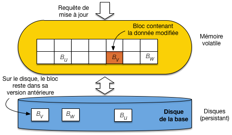
Fig. 2.4 Gestion naïve des écritures: les blocs doivent être écrits en ordre aléatoire.¶
Il faut bien réaliser qu’un bloc peut contenir des centaines d’enregistrements, et que déclencher une écriture sur disque dès que l’un d’entre eux est modifié va à l’encontre d’un principe de regroupement qui vise à limiter les entrées/sorties sur la mémoire persistante.
Les fichiers journaux (logs)¶
La bonne technique est plus complexe, mais beaucoup plus performante. Elle consiste à procéder comme dans le cas naïf, et à écrire séquentiellement la mise à jour dans un fichier séquentiel, distinct de la base, mais utilisable pour effectuer une reprise en cas de panne.
La méthode est illustrée par la Fig. 2.5. Le cache est divisé en deux parties, ainsi que la mémoire du disque. Idéalement, on dispose de deux disques (nous reviendrons sur ces aspects dans le chapitre Reprise sur panne). Le premier cache est celui de la base, comme précédemment. Le second sert de tampon d’écriture dans un fichier particulier, le journal (ou log) qui enregistre toutes les opérations de mise à jour.
Au moment d’une mise à jour, le bloc de la base modifié n’est pas écrit sur disque. En revanche la commande de mise à jour est écrite séquentiellement dans le fichier journal.
{kind=link}
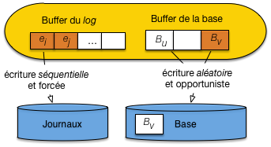
Fig. 2.5 Gestion des écritures avec fichier journal¶
On évite donc les écritures aléatoires, tout en s’assurant que toute commande de mise à jour est écrite sur disque et pourra donc servir à une reprise en cas de panne.
Que devient le bloc modifié dans le cache de la base? Et bien, il sera écrit sur disque de manière opportuniste, quand un événement rendra cette écriture nécessaire. Par exemple:
le cache est plein et il faut faire de la place;
le serveur est arrêté;
la base est inactive, et le système estime que le moment est venu de déclencher une synchronisation.
Le point important, c’est qu’au moment de l’écriture effective, l’opération sera probablement bien plus « rentable » qu’avec la solution naïve. En premier lieu, le bloc contiendra sans doute n enregistrements modifiés, et on aura donc remplacé n écritures (solution naïve) par une seule. En second lieu, il est possible que plusieurs blocs contigus sur le disque doivent être écrits, ce qui permet une écriture séquentielle évitant le délai de latence. Enfin, le système gagne ainsi une marge de manœuvre pour choisir le bon moment pour déclencher les écritures.
En résumé, cette technique basée sur les fichiers journaux, outre son intérêt intrinsèque, est une excellente illustration des efforts consacrés par les SGBD à privilégier les accès groupés et séquentiels au dépend des accès aléatoires et individuels.
Important
Les fichiers journaux sont à la base des techniques de reprise sur panne décrites dans le chapitre Reprise sur panne.
Le principe de localité¶
L’ensemble des techniques utilisées dans la gestion du stockage relève d’un principe assez général, dit de localité. Il résulte d’une observation pragmatique: l’ensemble des données utilisées par une application pendant une période donnée forme souvent un groupe bien identifié et présentant des caractéristiques de proximité.
Proximité spatiale: Si une donnée d est utilisée, les données « proches » de d ont de fortes chances de l’être également
Proximité temporelle: quand une application accède à une donnée d, il y a de fortes chances qu’elle y accède à nouveau peu de temps après.
Proximité de référence: si une donnée d1 référence une donnée d2, l’accès à d1 entraîne souvent l’accès à d2.
Sur la base de ce principe, un SGBD cherche à optimiser le placement les données « proches » de celles en cours d’utilisation. Cette optimisation se résume essentiellement à déplacer dans la hiérarchie des mémoires des groupes de données proches de la donnée utilisée à un instant t. Le pari est que l’application accèdera à d’autres données de ce groupe. Voici quelques mises en application de ce principe.
Localité spatiale: regroupement¶
Prenons un exemple simple pour se persuader de l’importance d’un bon regroupement des données sur le disque : le SGBD doit lire 5 chaînes de caractères de 1000 octets chacune. Pour une taille de bloc égale à 4096 octets, deux blocs peuvent suffire. La Fig. 2.6 montre deux organisations sur le disque. Dans la première chaque chaîne est placée dans un bloc différent, et les blocs sont répartis aléatoirement sur les pistes du disque. Dans la seconde organisation, les chaînes sont rassemblés dans deux blocs qui sont consécutifs sur une même piste du disque.
{kind=link}
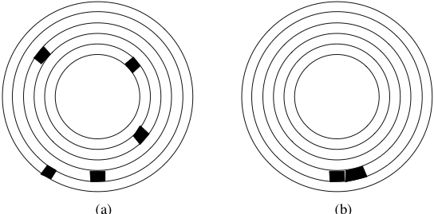
Fig. 2.6 Mauvaise et bonne organisation sur un disque.¶
La lecture dans le premier cas implique 5 déplacements des têtes de lecture, et 5 délais de latence ce qui donne un temps de \(5 \times (5.2 + 3) = 41\) ms. Dans le second cas, on aura un déplacement, et un délai de latence pour la lecture du premier bloc, mais le bloc suivant pourra être lu instantanément, pour un temps total de 8,2 ms.
Les performances obtenues sont dans un rapport de 1 à 5, le temps minimal s’obtenant en combinant deux optimisations : regroupement et contiguïté. Le regroupement consiste à placer dans le même bloc des données qui ont de grandes chances d’êtres lues au même moment. Les critères permettant de déterminer le regroupement des données constituent un des fondements des structures de données en mémoire secondaire qui seront étudiées par la suite. Le placement dans des blocs contigus est une extension directe du principe de regroupement. Il permet d’effectuer des lectures séquentielles qui, comme le montre l’exemple ci-dessus, sont beaucoup plus performantes que les lectures aléatoires car elles évitent des déplacements de têtes de lecture.
Plus généralement, le gain obtenu dans la lecture de deux données \(d_1\) et \(d_2\) est d’autant plus important que les données sont « proches », sur le disque, cette proximité étant définie comme suit, par ordre décroissant :
la proximité maximale est obtenue quand \(d_1\) et \(d_2\) sont dans le même bloc : elles seront alors toujours lues ensembles ;
le niveau de proximité suivant est obtenu quand les données sont placées dans deux blocs consécutifs ;
quand les données sont dans deux blocs situés sur la même piste du même disque, elles peuvent être lues par la même tête de lecture, sans déplacement de cette dernière, et en une seule rotation du disque ;
l’étape suivante est le placement des deux blocs dans un même cylindre, qui évite le déplacement des têtes de lecture ;
enfin si les blocs sont dans deux cylindres distincts, la proximité est définie par la distance (en nombre de pistes) à parcourir.
Les SGBD essaient d’optimiser la proximité des données au moment de leur placement sur le disque. Une table par exemple devrait être stockée sur une même piste ou, dans le cas où elle occupe plus d’une piste, sur les pistes d’un même cylindre, afin de pouvoir effectuer efficacement un parcours séquentiel.
Pour que le SGBD puisse effectuer ces optimisations, il doit se voir confier, à la création de la base, un espace important sur le disque dont il sera le seul à gérer l’organisation. Si le SGBD se contentait de demander au système d’exploitation de la place disque quand il en a besoin, le stockage physique obtenu risque d’être très fragmenté.
Important
Retenez qu’un critère essentiel de performance pour une base de données est le stockage le plus contigu possible des données.
Localité temporelle: ordonnancement¶
En théorie, si un fichier occupant n blocs est stocké contiguement sur une même piste, la lecture séquentielle de ce fichier sera – en ignorant le temps de transfert – approximativement n fois plus efficace que si tous les blocs sont répartis aléatoirement sur les pistes du disque.
Cet analyse doit cependant être relativisée car un système est souvent en situation de satisfaire simultanément plusieurs utilisateurs, et doit gérer leurs demandes concurramment. Si un utilisateur A demande la lecture du fichier F1 tandis que l’utilisateur B demande la lecture du fichier F2, le système alternera probablement les lectures des blocs des deux fichiers. Même s’ils sont tous les deux stockés séquentiellement, des déplacements de tête de lecture interviendront alors et minimiseront dans une certaine mesure cet avantage.
{kind=link}
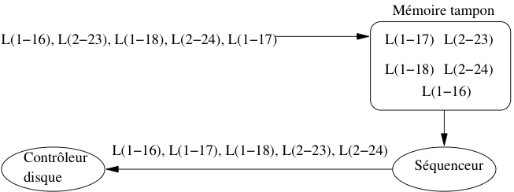
Fig. 2.7 Séquencement des entrées/sorties¶
Le système d’exploitation, ou le SGBD, peuvent réduire cet inconvénient en conservant temporairement les demandes d’entrées/sorties dans une zone tampon (cache) et en réorganisant (séquencement) l’ordre des accès. La Fig. 2.7 montre le fonctionnement d’un séquenceur. Un ensemble d’ordres de lectures est reçu, L(1-16) désignant par exemple la demande de lecture du bloc 16 sur la piste 1. On peut supposer sur cet exemple que deux utilisateurs effectuent séparément des demandes d’entrée/sortie qui s’imbriquent quand elles sont transmises vers le contrôleur.
Pour éviter les accès aléatoires qui résultent de cette imbrication, les demandes d’accès sont stockées temporairement dans un cache. Le séquenceur les trie alors par piste, puis par bloc au sein de chaque piste, et transmet la liste ordonnée au contrôleur du disque. Dans notre exemple, on se place donc tout d’abord sur la piste 1, et on lit séquentiellement les blocs 16, 17 et 18. Puis on passe à la piste 2 et on lit les blocs 23 et 24. Nous laissons au lecteur, à titre d’exercice, le soin de déterminer le gain obtenu.
Une technique pour systématiser cette stratégie est celle dite « de l’ascenseur ». L’idée est que les têtes de lecture se déplacent régulièrement du bord de la surface du disque vers l’axe de rotation, puis reviennent de l’axe vers le bord. Le déplacement s’effectue piste par piste, et à chaque piste le séquenceur transmet au contrôleur les demandes d’entrées/sorties pour la piste courante.
Cet algorithme réduit au maximum de temps de déplacement des têtes puisque ce déplacement s’effectue systématiquement sur la piste adjacente. Il est particulièrement efficace pour des systèmes avec de très nombreux processus demandant chacun quelques blocs de données. En revanche il peut avoir des effets assez désagréables en présence de quelques processus gros consommateurs de données. Le processus qui demande des blocs sur la piste 1 alors que les têtes viennent juste de passer à la piste 2 devra attendre un temps respectable avant de voir sa requête satisfaite.
Remplacement des blocs dans le cache¶
Pour finir sur les variantes de la localité, revenons sur ce qui se passe quand la mémoire cache est pleine et qu’un nouveau bloc doit être lu sur le disque. Un algorithme de remplacement doit être adopté pour retirer un des blocs de la mémoire et le replacer sur le disque (opérations dite de flush). L’algorithme le plus courant est dit Least Recently Used (LRU). Il consiste à choisir comme « victime » le bloc dont la dernière date de lecture logique est la plus ancienne. Ce bloc est alors soustrait de la mémoire centrale (il reste bien entendu sur le disque) et le nouveau bloc vient le remplacer.
Important
Si le bloc est marqué comme dirty (contenant des mises à jour) il faut l’écrire sur le disque.
La conséquence de cet algorithme est que le contenu du cache est une image fidèle de l’activité récente sur la base de données. Pour donner une illustration concrète de cet effet, supposons qu’une base soit divisée en trois parties distinctes X, Y et Z. L’application A1 ne lit que dans X, l’application A2 ne lit que dans Y, et l’application A3 ne lit que dans Z.
Si, dans la période qui vient de s’écouler, la base a été utilisée à 20% par A1, à 30% par A2 et à 50% par A3, alors on trouvera les mêmes proportions pour X, Y et Z dans le cache. Si seule A1 a accédé à la base, alors on ne trouvera que des données de X (en supposant que la taille de cette dernière soit suffisante pour remplir le cache).
Quand il reste de la place dans le cache, on peut l’utiliser en effectuant des lectures en avance (read ahead, ou prefetching). Une application typique de ce principe est donnée par la lecture d’une table. Comme nous le verrons au moment de l’étude des algorithmes de jointure, il est fréquent d’avoir à lire une table séquentiellement, bloc à bloc. Il s’agit d’un cas où, même si à un moment donné on n’a besoin que d’un ou de quelques blocs, on sait que toute la table devra être parcourue. Il vaut mieux alors, au moment où on effectue une lecture sur une piste, charger en mémoire tous les blocs de la relation, y compris ceux qui ne serviront que dans quelques temps et peuvent être placés dans un cache en attendant.
Quiz¶
Que contient le cache?
Un cache peut-il être plus grand que la base sur le disque?
Peut-il y avoir plus de lectures physiques de de lectures logiques?
Peut-il y avoir plus de lectures logiques de de lectures physiques?
Une mise à jour se fait:
Quel est le danger d’effectuer une mise à jour dans le cache et pas sur le disque?
Parmi les arguments contre l’écriture immédiate d’un bloc contenant un enregistrement modifié, lequel vous semble faux?
Quel est le critère de proximité le plus précis parmi les suivants
S3: Enregistrements, blocs et fichiers¶
Supports complémentaires:
Pour le système d’exploitation, un fichier est une séquence d’octets sur un disque. Les fichiers gérés par un SGBD sont un peu plus structurés. Ils sont constitués de blocs, qui eux-même contiennent des enregistrements (records en anglais), lesquels représentent physiquement les entités du SGBD. Selon le modèle logique du SGBD, ces entités peuvent être des n-uplets dans une relation, ou des objets. Nous nous limiterons au premier cas dans ce qui suit.
Important
À partir de maintenant le terme vague de « données » que nous avons utilisé jusqu’à présent désigne précisément un enregistrement. Dit autrement, les enregistrements constituent notre unité de gestion de l’information: on ne descend jamais à une granularité plus fine.
Enregistrements¶
Un n-uplet dans une table relationnelle est constitué d’une liste d’attributs, chacun ayant un type. À ce n-uplet est représenté physiquement, sous forme binaire, par un enregistrement, constitué de champs (field en anglais). Chaque type d’attribut détermine la taillle du champ nécessaire pour stocker une instance du type. Le Tableau 2.3 donne la taille habituelle utilisée pour les principaux types de la norme SQL, étant entendu que les systèmes sont libres de choisir le mode de stockage.
Tableau 2.3 Types SQL et tailles (en octets)¶ Type
Taille (en octets)
SMALLINT
2
INTEGER
4
BIGINT
8
FLOAT
4
DOUBLE PRECISION
8
NUMERIC (M, D)
M, D+2 si M < D
DECIMAL (M, D)
M, D+1 si M < D
CHAR(M)
M
VARCHAR(M)
L+1, avec L \(\leq\) M
BIT VARYING
\(< 2^8\)
DATE
8
TIME
6
DATETIME
14
La taille d’un enregistrement est, en première approximation,
la somme des tailles des champs stockant ses attributs.
En pratique les choses sont un peu plus compliquées.
Les champs – et donc les enregistrements –
peuvent être de taille variable par exemple.
Si la taille de l’un de ces enregistrements de taille variable
augmente au cours d’une mise
à jour, il faut pouvoir trouver un espace libre. Se pose
également la question de la représentation des valeurs à
NULL. Nous discutons des principaux aspects
de la représentation des enregistrements dans ce qui suit.
Champs de tailles fixe et variable¶
Comme l’indique le Tableau 2.3, les types de la norme SQL peuvent être divisés en deux catégories : ceux qui peuvent être représentés par un champ une taille fixe, et ceux qui sont représentés par un champ de taille variable.
Les types numériques (entiers et flottants) sont stockés
au format binaire sur 2, 4 ou 8 octets. Quand on utilise
un type DECIMAL pour fixer la précision, les
nombres sont en revanche stockés sous la forme
d’une chaîne de caractères. Par exemple
un champ de type DECIMAL(12,2) sera
stocké sur 12 octets, les deux derniers correspondant
aux deux décimales. Chaque octet contient un caractère
représentant un chiffre.
Les types DATE et TIME peuvent
être simplement représentés sous la forme de chaînes
de caractères, aux formats respectifs “AAAAMMJJ” et
“HHMMSS”.
Le type CHAR est particulier : il indique
une chaîne de taille fixe, et un CHAR(5)
sera donc stocké sur 5 octets. Se pose alors
la question : comment est représentée la valeur « Bou » ?
Il y a deux solutions :
on complète les deux derniers caractères avec des blancs ;
on complète les deux derniers caractères avec un caractère conventionnel.
La convention adoptée influe sur les comparaisons
puisque dans un cas on a stocké « Bou »
(avec deux blancs), et dans l’autre
« Bou » sans caractères complétant la longueur fixée. Si on utilise
le type CHAR il est important d’étudier la convention
adoptée par le SGBD.
On utilise beaucoup plus souvent le type VARCHAR(n)
qui permet de stocker des chaînes de longueur variable. Il
existe (au moins) deux possibilités :
le champ est de longueur n+1, le premier octet contenant un entier indiquant la longueur exacte de la chaîne ; si on stocke « Bou » dans un
VARCHAR(10), on aura un codage « 3Bou », le premier octet codant un 3 (au format binaire), les trois octets suivants des caratères “B”, “o” et “u”, et les 7 octets suivants restant inutilisés ;le champ est de longueur l+1, avec l < n ; ici on ne stocke pas les octets inutilisés, ce qui permet d’économiser de l’espace.
Noter qu’en représentant un entier sur un octet, on limite
la taille maximale d’un VARCHAR à 255 (vous voyez pourquoi?).
Une variante qui peut lever cette limite consiste à remplacer l’octet
initial contenant la taille par un caractère de terminaison
de la chaîne (comme en C).
Le type BIT VARYING peut être représenté comme un
VARCHAR, mais comme l’information stockée
ne contient pas que des caractères codés en ASCII,
on ne peut pas utiliser
de caractère de terminaison puisqu’on ne saurait
pas le distinguer des caractères de la valeur stockée.
On préfixe donc le champ par la taille utile,
sur 2, 4 ou 8 octets selon la taille maximale
autorisé pour ce type.
On peut utiliser un stockage optimisé dans le cas
d’un type énuméré dont les instances
ne peuvent prendre leur (unique) valeur que dans
un ensemble explicitement spécifié (par exemple
avec une clause CHECK). Prenons
l’exemple de l’ensemble de valeurs suivant
valeur1, valeur2, ..., valeurN
Le SGBD doit contrôler, au moment de l’affectation d’une valeur à un attribut de ce type, qu’elle appartient bien à l’ensemble énuméré {valeur1, valeur2, …, valeurN}. On peut alors stocker l’indice de la valeur, sur 1 ou 2 octets selon la taille de l’ensemble énuméré (au maximum 65535 valeurs pour 2 octets). Cela représente un gain d’espace, notamment si les valeurs consistent en chaînes de caractères.
En-tête d’enregistrement¶
De même que l’on préfixe un champ de longueur variable par sa taille utile, il est souvent nécessaire de stocker quelques informations complémentaires sur un enregistrement dans un en-tête. Ces informations peuvent être ;
la taille de l’enregistrement, s’il est de taille variable ;
un pointeur vers le schéma de la table, pour savoir quel est le type de l’enregistrement ;
la date de dernière mise à jour ;
etc.
On peut également utiliser cet en-tête pour les
valeurs NULL. L’absence de valeur pour
un des attributs est en effet délicate à gérer : si on
ne stocke rien, on risque de perturber le découpage du champ,
tandis que si on stocke une valeur conventionnelle, on
perd de l’espace.
Une solution possible consiste à créer un masque de bits,
un pour chaque champ de l’enregistrement, et à donner
à chaque bit la valeur 0 si le champ est NULL,
et 1 sinon. Ce masque peut être stocké dans l’en-tête
de l’enregistrement, et on peut alors se permettre
de ne pas utiliser d’espace pour une valeur
NULL, tout en restant en mesure de décoder
correctement la chaîne d’octets constituant
l’enregistrement.
Exemple
Prenons l’exemple d’une table Film avec les attributs
id de type INTEGER,
titre de type VARCHAR(50) et
annee de type INTEGER. Regardons la
représentation de l’enregistrement (123, 'Vertigo', NULL)
(donc l’année est inconnue).
L’identifiant est stocké sur 4 octets, et le titre
sur 8 octets, dont un pour la longueur.
L’en-tête de l’enregistrement contient un
pointeur vers le schéma de la table, sa longueur totale (soit
4 + 8), et un masque de bits 110 indiquant que le troisième
champ est à NULL. La Fig. 2.8 montre
cet enregistrement : notez qu’en lisant l’en-tête, on sait
calculer l’adresse de l’enregistrement suivant.
{kind=link}
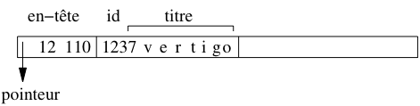
Fig. 2.8 Représentation d’un enregistrement¶
Blocs¶
Le stockage des enregistrements dans un fichier doit tenir compte du découpage en blocs de ce fichier. En général il est possible de placer plusieurs enregistrements dans un bloc, et on veut éviter qu’un enregistrement chevauche deux blocs. Le nombre maximal d’enregistrements de taille E pour un bloc de taille B est donné par \(\lfloor B/E \rfloor\) où la notation \(\lfloor x \rfloor\) désigne le plus grand entier inférieur à x.
Prenons l’exemple d’un fichier stockant une
table qui ne contient pas d’attributs de longueur variable – en
d’autres termes, elle n’utilise pas les types VARCHAR ou
BIT VARYING. Les enregistrements ont alors une taille
fixe obtenue en effectuant la somme des tailles de chaque attribut.
Supposons que cette taille soit en
l’occurrence 84 octets, et que la taille de bloc soit 4096 octets.
On va de plus considérer que chaque bloc contient
un en-tête de 100 octets pour stocker des informations
comme l’espace libre disponible dans le bloc,
un chaînage avec d’autres blocs, etc.
On peut donc placer
enregistrements dans un bloc. Notons qu’il reste dans chaque bloc \(3996 - (47 \times 84) = 48\) octets inutilisés dans chaque bloc.
{kind=link}
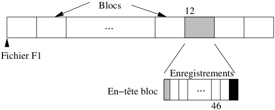
Fig. 2.9 Stockage des enregistrements dans un bloc¶
Le transfert en mémoire de l’enregistrement 563 de ce fichier est simplement effectué en déterminant dans quel bloc il se trouve (soit \(\lfloor 563/47 \rfloor + 1 = 12\)), en chargeant le douzième bloc en mémoire centrale et en prenant dans ce bloc l’enregistrement. Le premier enregistrement du bloc 12 a le numéro \(11 \times 47 + 1 = 517\), et le dernier enregistrement le numéro \(12 \times 47 = 564\). L’enregistrement 563 est donc l’avant-dernier du bloc, avec pour numéro interne le 46 (voir Fig. 2.9).
Le petit calcul qui précède montre comment on peut localiser physiquement un enregistrement : par son fichier, puis par le bloc, puis par la position dans le bloc. En supposant que le fichier est codé par “F1”, l’adresse de l’enregistrement peut être représentée par “F1.12.46”.
Il y a beaucoup d’autres modes d’adressage possibles. L’inconvénient d’utiliser une adresse physique par exemple est que l’on ne peut pas changer un enregistrement de place sans rendre du même coup invalides les pointeurs sur cet enregistrement (dans les index par exemple).
Pour permettre le déplacement des enregistrements on peut combiner une adresse logique qui identifie un enregistrement indépendamment de sa localisation. Une table de correspondance permet de gérer l’association entre l’adresse physique et l’adresse logique (voir Fig. 2.10). Ce mécanisme d’indirection permet beaucoup de souplesse dans l’organisation et la réorganisation d’une base puisqu’il il suffit de référencer systématiquement un enregistrement par son adresse logique, et de modifier l’adresse physique dans la table quand un déplacement est effectué. En revanche il entraîne un coût additionnel puisqu’il faut systématiquement inspecter la table de correspondance pour accéder aux données.
{kind=link}
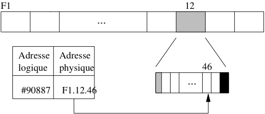
Fig. 2.10 Adressage avec indirection¶
Une solution intermédiaire combine adressages physique et logique. Pour localiser un enregistrement on donne l’adresse physique de son bloc, puis, dans le bloc lui-même, on gère une table donnant la localisation au sein du bloc ou, éventuellement, dans un autre bloc.
Reprenons l’exemple de l’enregistrement F1.12.46. Ici F1.12 indique bien le bloc 12 du fichier F1. En revanche 46 est une identification logique de l’enregistrement, gérée au sein du bloc. La Fig. 2.11 montre cet adressage à deux niveaux : dans le bloc F1.12, l’enregistrement 46 correspond à un emplacement au sein du bloc, tandis que l’enregistrement 57 a été déplacé dans un autre bloc.
{kind=link}
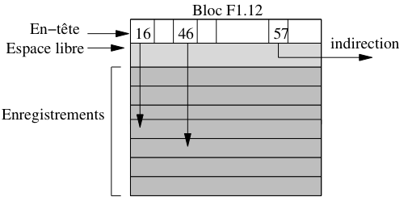
Fig. 2.11 Combinaison adresse logique/adresse physique¶
Noter que l’espace libre dans le bloc est situé entre l’en-tête du bloc et les enregistrements eux-mêmes. Cela permet d’augmenter simultanément ces deux composantes au moment d’une insertion par exemple, sans avoir à effectuer de réorganisation interne du bloc.
Ce mode d’identification offre beaucoup d’avantages, et est utilisé par ORACLE par exemple. Il permet de réorganiser souplement l’espace interne à un bloc.
Enregistrements de taille variable¶
Une table qui contient des attributs VARCHAR
ou BIT VARYING est représentée par des enregistrements de
taille variable. Quand un enregistrement est inséré dans le
fichier, on calcule sa taille non pas d’après le type des
attributs, mais d’après le nombre réel d’octets nécessaires
pour représenter les valeurs des attributs. Cette taille doit
de plus être stockée au début de l’emplacement pour que
le SGBD puisse déterminer le début de l’enregistrement suivant.
Il peut arriver que l’enregistrement soit mis à jour, soit pour
compléter la valeur d’un attribut, soit pour donner une valeur à
un attribut qui était initialement à NULL. Dans un tel
cas il est possible que la place initialement réservée soit
insuffisante pour contenir les nouvelles informations qui doivent
être stockées dans un autre emplacement du même
fichier. Il faut alors créer un chaînage entre
l’enregistrement initial et les parties complémentaires qui ont
dû être créées.
{kind=link}
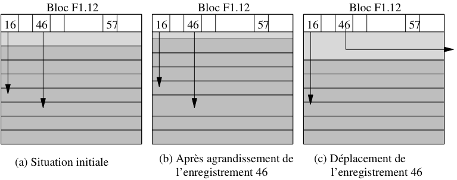
Fig. 2.12 Mises à jour d’un enregistrement de taille variable¶
Considérons par exemple le scénario suivant, illustré dans la Fig. 2.12 :
on insère dans la table Film un film Marnie, sans résumé ; l’enregistrement correspondant est stocké dans le bloc F1.12, et prend le numéro 46 ;
on insère un autre film, stocké à l’emplacement 47 du bloc F1.12 ;
on s’aperçoit alors que le titre exact est Pas de printemps pour Marnie, ce qui peut se corriger avec un ordre
UPDATE: si l’espace libre restant dans le bloc est suffisant, il suffit d’effectuer une réorganisation interne pendant que le bloc est en mémoire centrale, réorganisation qui a un coût nul en terme d’entrées/sorties ;enfin on met à nouveau l’enregistrement à jour pour stocker le résumé qui était resté à
NULL: cette fois il ne reste plus assez de place libre dans le bloc, et l’enregistrement doit être déplacé dans un autre bloc, tout en gardant la même adresse.
Au lieu de déplacer l’enregistrement entièrement (solution adoptée par Oracle par exemple), on pourrait le fragmenter en stockant le résumé dans un autre bloc, avec un chaînage au niveau de l’enregistrement (solution adoptée par MySQL). Le déplacement (ou la fragmentation) des enregistrements de taille variable est évidemment pénalisante pour les performances. Il faut effectuer autant de lectures sur le disque qu’il y a d’indirections (ou de fragments), et on peut donc assimiler le coût d’une lecture d’un enregistrement en n parties, à n fois le coût d’un enregistrement compact. Un SGBD comme Oracle permet de réserver un espace disponible dans chaque bloc pour l’agrandissement des enregistrements afin d’éviter de telles réorganisations.
Les enregistrements de taille variable sont un peu plus compliqués à gérer pour le SGBD que ceux de taille fixe. Les modules accédant au fichier doivent prendre en compte les en-têtes de bloc ou d’enregistrement pour savoir où commence et où finit un enregistrement donné.
En contrepartie, un fichier contenant des enregistrements de taille
variable utilise souvent mieux l’espace qui lui est attribué. Si on
définissait par exemple le titre d’un film et les autres attributs
de taille variable comme des CHAR et pas comme des
VARCHAR, tous les enregistrements seraient de
taille fixe, au prix de beaucoup d’espace perdu puisque la taille
choisie correspond souvent à des cas extrêmes rarement
rencontrés – un titre de film va rarement jusqu’à 50 octets.
Fichiers¶
Les systèmes d’exploitation organisent les fichiers qu’ils gèrent dans une arborescence de répertoires. Chaque répertoire contient un ensemble de fichiers identifés de manière unique (au sein du répertoire) par un nom. Il faut bien distinguer l’emplacement physique du fichier sur le disque et son emplacement logique dans l’arbre des répertoires du système. Ces deux aspects sont indépendants : il est possible de changer le nom d’un fichier ou de modifier son répertoire sans que cela affecte ni son emplacement physique ni son contenu.
Organisation de fichier¶
Du point de vue du SGBD, un fichier est une liste de blocs, regroupés sur certaines pistes ou répartis aléatoirement sur l’ensemble du disque et chaînés entre eux. La première solution est bien entendu préférable pour obtenir de bonnes performances, et les SGBD tentent dans la mesure du possible de gérer des fichiers constitués de blocs consécutifs. Quand il n’est pas possible de stocker un fichier sur un seul espace contigu (par exemple un seul cylindre du disque), une solution intermédiaire est de chaîner entre eux de tels espaces.
Le terme d’organisation pour un fichier désigne la structure utilisée pour stocker les enregistrements du fichier. Une bonne organisation a pour but de limiter les ressources en espace et en temps consacrées à la gestion du fichier.
Espace. La situation optimale est celle où la taille d’un fichier est la somme des tailles des enregistrements du fichier. Cela implique qu’il y ait peu, ou pas, d’espace inutilisé dans le fichier.
Temps. Une bonne organisation doit favoriser les opérations sur un fichier. En pratique, on s’intéresse plus particulièrement à la recherche d’un enregistrement, notamment parce que cette opération conditionne l’efficacité de la mise à jour et de la destruction. Il ne faut pas pour autant négliger le coût des insertions.
L’efficacité en espace peut être mesurée comme le rapport entre le nombre de blocs utilisés et le nombre minimal de blocs nécessaire. Si, par exemple, il est possible de stocker 4 enregistrements dans un bloc, un stockage optimal de 1000 enregistrements occupera 250 blocs. Dans une mauvaise organisation il n’y aura qu’un enregistrement par bloc et 1000 blocs seront nécessaires. Dans le pire des cas l’organisation autorise des blocs vides et la taille du fichier devient indépendante du nombre d’enregistrements.
Il est difficile de garantir une utilisation optimale de l’espace à tout moment à cause des destructions et modifications. Une bonne gestion de fichier doit avoir pour but – entre autres – de réorganiser dynamiquement le fichier afin de préserver une utilisation satisfaisante de l’espace.
L’efficacité en temps d’une organisation de fichier se définit en fonction d’une opération donnée (par exemple l’insertion, ou la recherche) et se mesure par le rapport entre le nombre de blocs lus et la taille totale du fichier. Pour une recherche par exemple, il faut dans le pire des cas lire tous les blocs du fichier pour trouver un enregistrement, ce qui donne une complexité linéaire. Certaines organisations permettent d’effectuer des recherches en temps sous-linéaire : arbres-B (temps logarithmique) et hachage (temps constant).
Une bonne organisation doit réaliser un bon compromis pour les quatres principaux types d’opérations :
insertion d’un enregistrement ;
recherche d’un enregistrement ;
mise à jour d’un enregistrement ;
destruction d’un enregistrement.
Dans ce qui suit nous discutons de ces quatre opérations sur la structure la plus simple qui soit, le fichier séquentiel (non ordonné). Le chapitre suivant est consacré aux techniques d’indexation et montrera comment on peut optimiser les opérations d’accès à un fichier séquentiel.
Dans un fichier séquentiel (sequential file ou heap file), les enregistrements sont stockés dans l’ordre d’insertion, et à la première place disponible. Il n’existe en particulier aucun ordre sur les enregistrements qui pourrait faciliter une recherche. En fait, dans cette organisation, on recherche plutôt une bonne utilisation de l’espace et de bonnes performances pour les opérations de mise à jour.
Recherche¶
La recherche consiste à trouver le ou les enregistrements satisfaisant un ou plusieurs critères. On peut rechercher par exemple tous les films parus en 2001, ou bien ceux qui sont parus en 2001 et dont le titre commence par “V”, ou encore n’importe quelle combinaison booléenne de tels critères.
La complexité des critères de sélection n’influe pas sur le coût de la recherche dans un fichier séquentiel. Dans tous les cas on doit partir du début du fichier, lire un par un tous les enregistrements en mémoire centrale, et effectuer à ce moment-là le test sur les critères de sélection. Ce test s’effectuant en mémoire centrale, sa complexité peut être considérée comme négligeable par rapport au temps de chargement de tous les blocs du fichier.
Quand on ne sait par à priori combien d’enregistrements on va trouver, il faut systématiquement parcourir tout le fichier. En revanche, si on fait une recherche par clé unique, on peut s’arrêter dès que l’enregistrement est trouvé. Le coût moyen est dans ce cas égal à \(\frac{n}{2}\), n étant le nombre de blocs.
Si le fichier est trié sur le champ servant de critère de recherche, il est possible d’effectuer un recherche par dichotomie qui est beaucoup plus efficace. Prenons l’exemple de la recherche du film Scream. L’algorithme est simple :
prendre le bloc au milieu du fichier ;
si on y trouve Scream la recherche est terminée ;
sinon, soit les films contenus dans le bloc précèdent Scream dans l’ordre lexicographique, et la recherche doit continuer dans la partie droite, du fichier, soit la recherche doit continuer dans la partie gauche ;
on recommence à l’étape (1), en prenant pour espace de rercherche la moitié droite ou gauche du fichier, selon le résultat de l’étape 2.
L’algorithme est récursif et permet de diminuer par deux, à chaque étape, la taille de l’espace de recherche. Si cette taille, initialement, est de n blocs, elle passe à \(\frac{n}{2}\) à l’étape 1, à \(\frac{n}{2^2}\) à l’étape 2, et plus généralement à \(\frac{n}{2^k}\) à l’étape k.
Au pire, la recherche se termine quand il n’y a plus qu’un seul bloc à explorer, autrement dit quand k est tel que \(n < 2^k\). On en déduit le nombre maximal d’étapes : c’est le plus petit k tel que \(n < 2^k\), soit \(log_2(n) < k\), soit \(k = \lceil log_2(n) \rceil\).
Pour un fichier de 100 Mo, un parcours séquentiel implique la lecture des 25~000 blocs, alors qu’une recherche par dichotomie ne demande que \(\lceil log_2(25000) \rceil=15\) lectures de blocs !! Le gain est considérable.
L’algorithme décrit ci-dessus se heurte cependant en pratique à deux obstacles.
en premier lieu il suppose que le fichier est organisé d’un seul tenant, et qu’il est possible à chaque étape de calculer le bloc du milieu ; en pratique cette hypothèse est très difficile à satisfaire ;
en second lieu, le maintien de l’ordre dans un fichier soumis à des insertions, suppressions et mises à jour est très difficile à obtenir.
Cette idée de se baser sur un tri pour effectuer des recherches efficaces est à la source de très nombreuses structures d’index qui seront étudiées dans le chapitre suivant. L’arbre-B, en particulier, peut être vu comme une structure résolvant les deux problèmes ci-dessus. D’une part il se base sur un système de pointeurs décrivant, à chaque étape de la recherche, l’emplacement de la partie du fichier qui reste à explorer, et d’autre part il utilise une algorithmique qui lui permet de se réorganiser dynamiquement sans perte de performance.
Mises à jour¶
Au moment où on doit insérer un nouvel enregistrement dans un fichier, le problème est de trouver un bloc avec un espace libre suffisant. Il est hors de question de parcourir tous les blocs, et on ne peut pas se permettre d’insérer toujours à la fin du fichier car il faut réutiliser les espaces rendus disponibles par les destructions. La seule solution est de garder une structure annexe qui distingue les blocs pleins des autres, et permette de trouver rapidement un bloc avec de l’espace disponible. Nous présentons deux structures possibles.
La première est une liste doublement chaînée des blocs libres (voir Fig. 2.13). Quand de l’espace se libère dans un bloc plein, on l’insère à la fin de la liste chaînée. Inversement, quand un bloc libre devient plein, on le supprime de la liste. Dans l’exemple de la Fig. 2.13, en imaginant que le bloc 8 devienne plein, on chainera ensemble les blocs 3 et 7 par un jeu classique de modification des adresses. Cette solution nécessite deux adresses (bloc précédent et bloc suivant) dans l’en-tête de chaque bloc, et l’adresse du premier bloc de la liste dans l’en-tête du fichier.
{kind=link}
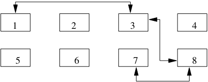
Fig. 2.13 Gestion des blocs libres avec liste chaînée¶
Un inconvénient de cette structure est qu’elle ne donne pas d’indication sur la quantité d’espace disponible dans les blocs. Quand on veut insérer un enregistrement de taille volumineuse, on risque d’avoir à parcourir une partie de la liste – et donc de lire plusieurs blocs – avant de trouver celui qui dispose d’un espace suffisant.
La seconde solution repose sur une structure séparée des blocs du fichier. Il s’agit d’un répertoire qui donne, pour chaque page, un indicateur O/N indiquant s’il reste de l’espace, et un champ donnant le nombre d’octets ( Fig. 2.14). Pour trouver un bloc avec une quantité d’espace libre donnée, il suffit de parcourir ce répertoire.
{kind=link}
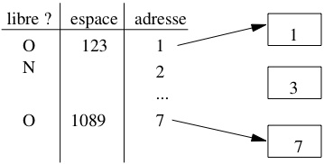
Fig. 2.14 Gestion des blocs libres avec répertoire¶
Le répertoire doit lui-même être stocké dans une ou plusieurs pages associées au fichier. Dans la mesure où l’on n’y stocke que très peu d’informations par bloc, sa taille sera toujours considérablement moins élévée que celle du fichier lui-même, et on peut considérer que le temps d’accès au répertoire est négligeable comparé aux autres opérations.
Quiz¶
Quelle est la différence entre un champ de type
varchar(25)et un champ de typevarchar(250)?Je représente l’adresse d’un enregistrement par son numéro de bloc B, et son numéro interne au bloc i (schéma d’indirection, vu ci-dessus). Quelle réponse est vraie?
Un programmeur paresseux décide de simplifier la méthode d’insertion en insérant tous les nouveaux enregistrements dans le premier bloc du fichier. On connaît donc l’adresse du premier bloc, qui ne change jamais, et on ne connaît que ça. Quelle affirmation est vraie (en supposant que le système applique les méthodes de stockage vues précédemment)?
Autre méthode d’insertion standard : on insère toujours dans le dernier bloc du fichier. On connaît donc l’adresse du dernier bloc, qui change de temps en temps, et on ne connaît que ça
Je veux que mon fichier soit trié sur un champ, par exemple l’année du film. Quelles affirmations sont vraies?
Je veux stocker dans ma base, pour chaque film, son fichier vidéo MP4. Je choisis de créer un champ de type
BIT VARYINGpour le MP4. Quelle affirmation est vraie?
Exercices¶
Exercice ex-lecture-disque: temps de lecture d’une base
Nous avons une base de 3 Tos.
Quel est le temps minimal de lecture de la base complète sur un disque magnétique?
On veut lire 100 objets de 10 octets. Combien de temps cela prend-il s’ils sont dispersés sur un disque?
Même question s’ils sont en mémoire centrale
Correction
Réponses:
On compte 100 Mo/s pour le débit d’un disque. Il faut 10s pour 1 Go, 10 000 s. pour 1 To et donc 30 000 s. pour 3 Tos. Soit plus de 8 heures….
La taille des objets est négligeable, ce qui compte, ce sont les 100 accès qui prennent (ordre de grandeur) 10 ms chacun. Soit 1 seconde au total.
En mémoire RAM l’ordre de grandeur d’un accès est la nanoseconde. Les 100 objets sont lus en 1 millionième de seconde.
Exercice ex-seqaleatoire: lectures séquentielles et aléatoires sur un disque
On dispose d’une base de 3 Go constituée d’enregistrements dont la taille moyenne est 3 000 octets.
Combien de temps prend la lecture complète de cette base avec un parcours séquentiel ?
Combien de temps prend la lecture en effectuant une lecture physique aléatoire pour chaque enregistrement ?
Vous pouvez prendre les valeurs du tbl-memoires pour les calculs.
Exercice ex-perfdisque: Spécifications d’un disque magnétique
Le Tableau 2.4 donne les spécifications partielles d’un disque magnétique. Répondez aux questions suivantes.
Quelle est la capacité moyenne d’une piste?, d’un cylindre? d’une surface? du disque?
Quel est le temps de latence maximal?
Quel est le temps de latence moyen?
Combien de temps faut-il pour transmettre le contenu d’une piste et combien de rotations peut effectuer le disque pendant ce temps?
Tableau 2.4 Un (vieux) disque magnétique¶ Caractéristique
Valeur
Taille d’un secteur
512 octets
Nbre de plateaux
5
Nbre de têtes
10
Nombre de secteurs
5 335 031 400,00
Nombre de cylindres
10 000
Nombre moyen de secteurs par piste
40 000
Temps de positionnement moyen
10 ms
Vitesse de rotation
7 400 rpm
Déplacement de piste à piste
0,5 ms
Débit moyen
100 Mo / s
Correction
Capacité d’une piste: \(40\,000 \times 512 = 20\,480\,000\), soit 20 Mo
Capacité d’un cylindre: \(20\,480\,000 \times 10 = 204\,800\,000\)
Capacité d’une surface: \(20\,480\,000 \times 10\,000 = 200G\)
Capacité du disque: 2 To
Le temps de latence maximal est le temps pour une rotation complète. Ici on a \(\frac{7400}{60}=123\) rotations par seconde, soit une rotation toutes les 1/123=8 ms. Le temps moyen est de 4 ms.
Il faut donc transférer 20 Mo, ce qui prend 1/5 de seconde en tenant compte du débit maximal. En 500 millisecondes, on peut effectuer \(\frac{500}{8}= 62\) rotations: le débit est clairement le facteur pénalisant dans cette hypothèse.
Exercice ex-deplmoyen: temps de positionnement moyen
Etant donné un disque contenant C cylindres, un temps de déplacement entre deux pistes adjacentes de s ms, donner la formule exprimant le temps de positionnement moyen. On décrira une demande de déplacement par une paire \([d, a]\) où d est la piste de départ et a la piste d’arrivée, et on supposera que toutes les demandes possibles sont équiprobables.
Attention, on ne peut pas considérer que les têtes se déplacent en moyenne de C/2 pistes. C’est vrai si la tête de lecture est au bord des plateaux ou de l’axe, mais pas si elle est au milieu du plateau. Il faut commencer par exprimer le temps de positionnement moyen en fonction d’une position de départ donnée, puis généraliser à l’ensemble des positions de départ possibles.
On pourra utiliser les deux formules suivantes:
et
et commencer par exprimer le nombre moyen de déplacements en supposant que les têtes de lecture sont en position p. Il restera alors à effectuer la moyenne de l’expression obtenue, pour l’ensemble des valeurs possibles de p.
Correction
On commence par calculer le temps en supposant connue la position courante des têtes de lecture, p, avec \(1 < p < C\). Le nombre moyen de déplacements à effectuer vers une piste i avec \(1 \leq i < p\) est,:
\[\frac{1+2+\ldots + (p - 1)}{p - 1} = \frac{p \times (p -1)}{2 \times (p-1)} = \frac{p}{2}\]De même, le nombre moyen de déplacements à effectuer vers une piste j avec \(p \leq j \leq C\) est:
\[\frac{1+2+\ldots + (C - p - 1)}{C - p} = \frac{(C- p) \times (C - p +1)}{2 \times (C -p)} = \frac{C - p}{2}\]Noter que pour \(p = C/2\), le nombre moyen de déplacements, dans un sens ou dans l’autre, est de \(C/4\), alors que quand p=1, le temps de déplacement moyen est de \(C/2\).
Pour une position p donnée, la probabilité d’aller en \(i < p\) est p/C, et celle d’aller en j > p est \((C - p) / C\). On obtient donc le nombre de déplacements moyen pour une position p:
\[\frac{p^2}{2 \times C} + \frac{(C - p)^2}{2 \times C}\]Il reste à effectuer la moyenne de cette expression pour l’ensemble des positions de départs possibles, ce qui donne
On en déduit que le nombre de déplacements moyen est de l’ordre du tiers du nombre total de pistes (ou cylindres).
Exercice ex-delais: calcul latence et positionnement
Soit un disque de 5 000 cylindres tournant à 12 000 rotations par minute, avec un temps de déplacement entre deux pistes adjacentes égal à 0,002 ms et 500 secteurs de 512 octets par piste.
Quel est le temps moyen de lecture d’un bloc de 4,096 octets? Calculer indépendamment le délai de latence, de positionnement et le temps de transfert. NB: on sait par l’exercice précédent que le nombre moyen de déplacements et 1/3 du nombre total de pistes.
Correction
Temps de transfert (8/400 de rotation).
Délai de latence,: 12000 rotations pour 60s, donc une rotation en 60/12000= 5 ms. Temps moyen de latence=2,5 ms.
Temps moyen de positionnement,: environ 1/3 du temps total de balayage du disque, soit \(\frac{0,002 \times 5000}{3} \approx 3\) ms
Exercice ex-hitratio: comprendre le hit ratio
On considère un fichier de 1 Go et un cache de 100 Mo.
quel est le hit ratio en supposant que la probabilité de lire les blocs est uniforme?
même question, en supposant que 80% des lectures concernent 200 Mo, les 20 % restant étant répartis uniformément sur 800 Mo?
avec l’hypothèse précédente, jusqu’à quelle taille de cache peut-on espérer une amélioration significative du hit ratio?
Prenez l’hypothèse que la stratégie de remplacement est de type LRU.
Exercice ex-calculs-fichiers: quelques calculs
Soit la table de schéma suivant:
create table Personne (id integer not null, nom varchar(40) not null, prenom varchar(40) not null, adresse varchar(70), dateNaissance date)Cette table contient 300 000 enregistrements, stockés dans des blocs de taille 4 096 octets. Un enregistrement ne peut pas chevaucher deux blocs, et chaque bloc comprend un entête de 200 octets. On ignore l’entête des enregistrements.
Donner la taille maximale et la taille minimale d’un enregistrement. On suppose par la suite que tous les enregistrements ont une taille maximale.
Quel est le nombre maximal d’enregistrements par bloc?
Quelle est la taille du fichier?
Quel est le temps moyen de recherche d’un enregistrement si les blocs sont distribués au hasard sur le disque.
On suppose que le fichier est trié sur le nom. Quel est le temps d’une recherche dichotomique pour chercher une personne avec un nom donné?
Correction
Taille minimale,: 4 + 1 + 1 + 0 (null) + 0 (null). Taille maximale: \(4 + 41 + 41 + 71 + 8 = 165\).
Espace disponible pour les enregistrements: 4096 - 200 = 3896. Nombre max. d’enregistrements par bloc: \(\lfloor 3\,896/165 \rfloor = 23\)
Taille du fichier: \(\lceil 300\,000 / 23 \rceil = 13\,044\) blocs, soit \(13\,044 \times 4\,096 = 53\) Mo.
Si les blocs sont distribués au hasard, il faut 10 ms pour lire chaque bloc, et donc \(13\,044 \times 10\) ms, ou 130 secondes, soit plus de deux minutes!
Avec une recherche par dichotomie, il faut \(log_2(13\,044) = 13\) lectures de blocs, soit 130 ms au pire.
Atelier¶
Cet atelier va proposer, tout au long des chapitres du cours, d’étudier le stockage et l’optimisation d’une même base de données. Le schéma suivant, ainsi que ses statistiques, seront utilisés dans l’ensemble des exercices du cours.
Cours (Id_Cours, Id_Enseignant, Intitule)
Personne (Id_Personne, Nom, Prenom, Annee_Naissance)
Salle (Id_Salle, Localisation, Capacite)
Reservation (Id_Salle, Id_Cours, Date, heure_debut, heure_fin)
Voici la taille des différents types :
Les identifiants (Id_…) et les nombres (ECTS, Capacite) sont codés sur 4 octets,
les dates, années et heures sur 4 octets,
Nom, Prenom, Intitule, Localisation sur 50 octets
Et voici les statistiques sur le contenu de la base:
2 200 tuples dans la table Cours,
124 000 tuples Personne (Contenant enseignants et auditeurs),
500 tuples Salle (Avec une capacite de 20 à 600),
514 000 tuples Reservation.
Le paramétrage du serveur de données est le suivant:
Taille d’une adresse : 10 octets
Le cache comprend 11 blocs en mémoire centrale,
Un bloc fait 8 ko
Un pourcentage d’espace libre (PCTFREE) de 10% est laissé dans chaque bloc

Ce cours de Philippe Rigaux est mis à disposition selon les termes de la licence Creative Commons Attribution - Pas d’Utilisation Commerciale - Partage dans les Mêmes Conditions 4.0 International.
Table Of Contents
- 1. Introduction
- 2. Dispositifs de stockage
- 3. Structures d’index: l’arbre B
- 4. Structures d’index: le hachage
- 5. Moteurs de stockage
- 6. Opérateurs et algorithmes
- 7. Evaluation et optimisation
- 8. Travaux pratiques: optimisation
- 9. Transactions
- 10. Contrôle de concurrence
- 11. Reprise sur panne
- 12. Annales des examens
Recherche
Saisissez un ou plusieurs mots-clés.